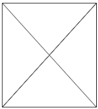

Bienvenidos a mi portafolio. Mi nombre es Ricardo Romero Arana. En esta página web os mostraré algunos de mis proyectos (si pincháis en el enlace de "Mis proyectos" podréis verlos), así como testimonios de los diferentes encargados que me han tenido a su disposición en la empresa.
Para comenzar podéis ver mi Currículum Vitae completo. Más abajo tenéis la información mencionada anteriormente, no dudéis en pinchar en la página de contacto (arriba a la derecha) para cualquier tipo de consulta. ¡Espero que os guste!
Currículum Vitae
2012-2014
Título de bachillerato y de B2 en inglés
En estos dos años terminé el bachillerato de la rama tecnológica y además obtuve el título de idiomas B2 en inglés
2014-2016
Ciclo Formativo de Grado Superior (DAW)
En estos dos años terminé el grado superior en Desarrollo de Aplicaciones Web con 3 meses de práctica de empresas
2016-2017
Ciclo Formativo de Grado Superior (DAM)
Gracias a haber completado el grado superior mencionado anteriormente, conseguí la titulación de Desarrolo de Aplicaciones Multiplataforma en un año académico, con otros 3 meses de prácticas de empresa
2017-2019
Trabajando en la empresa: NombreEmpresa
Tras acabar estos estudios, me contrataron en la empresa donde hice las prácticas, en la cual acabé dos años trabajando
2019-2020
Trabajando en la empresa: NombreEmpresa
Con dos años de experencia laboral busqué una oportunidad de empleo más atractiva que me la brindó la empresa NombreEmpresa trabajando en en la especialidad de back-end
2020-2021
Trabajando en la empresa: NombreEmpresa
Después de un año en la empresa NombreEmpresa cambié hacia la codificación de front-end, trabajando a distancia para NombreEmpresa